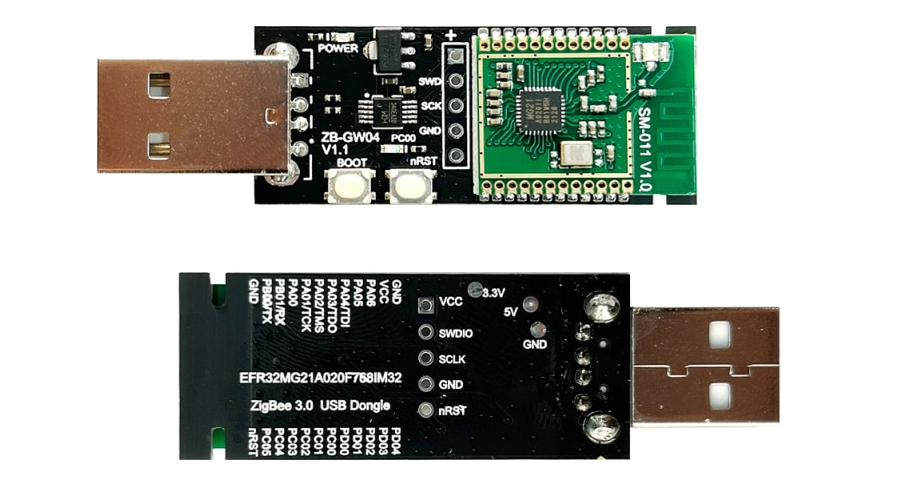

การติดตั้งเฟิร์มแวร์ ZigBee 3.0 สำหรับชิป Silicon Labs EFR32 SoC#
▷ EFR32-based ZigBee 3.0 USB Devices#
ในปัจจุบัน อุปกรณ์ประเภท ZigBee 3.0 Devices ที่ใช้ชิป EFR32MG1 Series 1 SoC และ EFR32MG21 Series 2 SoC ของบริษัท Silicon Labs เช่น EFR32MG1B (Series 1, ARM Cortex-M4F, 40MHz) หรือ EFR32MG21 (Series 2, ARM Cortex-M33, 80MHz) ตามลำดับ ก็เป็นอีกตัวเลือกหนึ่งสำหรับการนำไปใช้ร่วมกับซอฟต์แวร์อย่างเช่น ZHA หรือ Zigbee2MQTT เพื่อใช้กับระบบ Smart Home
ตัวอย่างอุปกรณ์ได้แก่
- Chengdu E-Byte E180-ZG120B-TB (Test Board) [→] เป็นบอร์ดทดลองที่ใช้ชิป EFR32MG1B232F256GM48
- Itead / Sonoff ZigBee 3.0 USB Dongle ใช้ชิป EFR32MG21A020F768IM32 แต่ไม่มีสายอากาศภายนอก
- Itead / Sonoff ZigBee 3.0 USB Dongle "ZBDongle-E" [→] เป็นรุ่นที่มีสายอากาศภายนอกและกล่องใส่ที่เป็นโลหะ และได้ติดตั้งเฟิร์มแวร์ EmberZNet 6.10.3 มาให้แล้ว
- ZB-GW04 V1.1 ZigBee 3.0 USB Dongle ใช้โมดูล SM-011 V1.0 ซึ่งมีชิป EFR32MG21A020F768IM32 และใช้สายอากาศแบบ PCB Antenna และได้ติดตั้งเฟิร์มแวร์ EmberZNet 6.7.9 มาให้แล้ว
- Itead / Sonoff ZB-Bridge [→] ใช้ชิป EFR32MG21 + ESP8266/8285
รูป: บอร์ดทดลอง E-Byte E180-ZG120B-TB

รูป: ZB-GW04 V1.1 ZigBee 3.0 USB Dongle
▷ E-Byte E180-ZG120B-TB#
E-Byte E180-ZG120B-TB (Manual) เป็นบอร์ดไมโครคอนโทรลเลอร์ที่มีโมดูล Ebyte E180-ZG120B แบบ SMD และมีฝาครอบโลหะ
- ภายในโมดูลมีชิป Silicon Labs EFR32MG1B232F256GM48
(MG1B232 - EFM32 Mighty Gecko 1B Family)
- มีตัวประมวลผล 32-bit ARM Cortex-M4F (38.4MHz), on-chip Flash 256KB, SRAM 32KB
- สามารถสื่อสารไร้สายด้วยโพรโทคอล 2.4GHz / Sub-GHz IEEE 802.15.4 (รองรับการใช้งาน Zigbee 3.0 & Thread) มีกำลังส่งสูงสุด +19.5dB
- มีวงจร USB-to-Serial (ใช้ชิป CP2102G) ที่เชื่อมต่อกับคอนเนกเตอร์ MicroUSB
- CP2102 TXD → MCU PA1/RX pin
- CP2102 RXD ← MCU PA0/TX pin
- มีคอนเนกเตอร์แบบ IPEX สำหรับเชื่อมต่อกับสายอากาศภายนอกได้ (ให้ต่อสายอากาศภายนอกก่อนนำไปใช้งาน !!!)
- แต่ไม่ได้ติดตั้งเฟิร์มแวร์ EmberZNet มาให้
รูป: ผังของบอร์ดที่แสดงตำแหน่งของขาและอุปกรณ์บนแผ่น PCB
▷ การติดตั้งเฟิร์มแวร์ Serial Bootloader#
ในกรณีที่ชิป EFR32 ไม่มีเฟิร์มแวร์ Serial Bootloader อยู่ในหน่วยความจำ Flash จำเป็นต้องติดตั้งเฟิร์มแวร์ดังกล่าวก่อน (เพื่อความสะดวกในการอัปโหลดเฟิร์มแวร์ที่เป็น Application Firwmare) และจะต้องใช้อุปกรณ์ฮาร์ดแวร์ที่เรียกว่า SWD (Serial-Wire-Debug) Programmer/Debugger ที่ใช้ขาสัญญาณเพียงสองเส้นคือ SWCLK และ SWDATA นอกจากนั้นแล้วจะต้องมีแรงดันไฟเลี้ยง VDD=3.3V และ GND สำหรับการทำงานของตัวชิปด้วย
ตัวอย่างอุปกรณ์ SWD Programmer/Debugger ที่สามารถนำมาใช้ได้ เช่น SEGGER J-Link และอุปกรณ์อื่นที่ถือว่าเป็น Arm CMSIS DAP-Link Compatible (เลือกใช้อุปกรณ์ DAP-Link ในบทความนี้)
รูป: การใช้อุปกรณ์ DAP-Link (SWD Interface) ร่วมกับบอร์ด E-Byte E180-ZG120B-TB
ถัดไปเป็นการอธิบายขั้นตอนการติดตั้งเฟิร์มแวร์ Serial Bootloader ให้กับชิป EFR32MG1B บนบอร์ด E-Byte E180-ZG120B-TB
ซอฟต์แวร์และการทำคำสั่งต่าง ๆ จะใช้สำหรับคอมพิวเตอร์ผู้ใช้ Linux / Ubuntu (อาจเป็น Ubuntu VM ที่ทำงานด้วย Oracle VirtualBox ก็ได้)
1) ทำคำสั่งเพื่อติดตั้งโปรแกรม srecord และ openocd สำหรับ Ubuntu ดังนี้
sudo apt install -y srecord openocd
2) ดาวน์โหลดไฟล์ที่เป็น Gecko Bootloader
จาก https://github.com/zha-ng/EZSP-Firmware
โดยได้เลือกใช้ไฟล์ efr32mg1b-bootloader-1.10.3-combined.s37 สำหรับชิป EFR32MG1B
(ใช้ขา PB12 เป็นตัวเลือกเข้าสู่ Bootloader Mode)
3) ทำคำสั่งเพื่อแปลงไฟล์ .s37 (Motorola SREC Format)
ให้เป็น .hex (Intel Hex Format)
# Set the bootloader filename (without the file extension).
$ BOOTLOADER=efr32mg1b-bootloader-1.10.3-combined
# Convert the bootloader file from SREC to Intel hex format.
$ srec_cat ${BOOTLOADER}.s37 -Motorola \
-o ${BOOTLOADER}.hex -Intel
4) ทำคำสั่ง openocd เพื่อเขียนไฟล์ Serial Bootloader (.hex) ไปยังบอร์ดเป้าหมาย
โดยใช้อุปกรณ์ CMSIS DAP-Link ที่เชื่อมต่อกับคอมพิวเตอร์ของผู้ใช้ Ubuntu
# Write the bootloader firmware to the target board.
$ openocd -f interface/cmsis-dap.cfg -f target/efm32.cfg \
-c "init; reset init; halt; poll;" \
-c "flash write_image erase ${BOOTLOADER}.hex;" \
-c "reset; shutdown"
เมื่อติดตั้ง Serial Bootloader ได้สำเร็จแล้ว การอัปโหลดเฟิร์มแวร์ไปยังชิป EFR32MG1B ในครั้งถัดไป ก็สามารถทำได้ง่าย ผ่านทาง USB-to-Serial (ใช้ขา PA0 / PA1 ของชิป สำหรับ UART TX / RX ตามลำดับ) และไม่จำเป็นต้องใช้อุปกรณ์ CMSIS DAP-Link อีกต่อไป
รูป: การทำคำสั่งใน Ubuntu VM เพื่อติดตั้ง Serial Bootloader
▷ การติดตั้งเฟิร์มแวร์ EmberZNet / EZSP สำหรับ EFR32MG1B#
ขั้นตอนต่อไปนี้ ได้ทดลองใช้กับบอร์ด E-Byte E180-ZG120B-TB (EFR32MG1B)
1) ดาวน์โหลดซอร์สโค้ดของโปรแกรม Elelabs' EZSP Firmware Update Utility จาก Github แล้วติดตั้งแพ็กเกจต่าง ๆ สำหรับ Python 3 เพื่อใช้งาน
# Clone the repository of Elelabs' EZSP Firmware Update Utility.
$ git clone https://github.com/Elelabs/elelabs-zigbee-ezsp-utility
# Change the working directory
$ cd elelabs-zigbee-ezsp-utility/
# Install necessary Python packages.
$ pip3 install -r requirements.txt
2) ทำคำสั่งเพื่อตรวจสอบอุปกรณ์ (บอร์ดไมโครคอนโทรลเลอร์) ที่เชื่อมต่อกับพอร์ต /dev/ttyUSB0
$ python3 Elelabs_EzspFwUtility.py probe -p /dev/ttyUSB0
Elelabs_EzspFwUtility: EZSP adapter in bootloader mode detected:
Elelabs_EzspFwUtility: Gecko Bootloader v1.A.3
จากข้อความเอาต์พุต จะเห็นได้ว่า สามารถมองเห็นอุปกรณ์และแสดงเวอร์ชันของ Gecko Bootloader ได้
3) ดาวน์โหลด NCP Application Firmware (.gbl) ที่ได้จัดเตรียมไว้โดย Elelab และเฟิร์มแวร์นี้ได้ใช้ไลบรารี EmberZNet PRO Stack / EmberZNet Serial Protocol (EZSP) ของ Silicon Labs ในการพัฒนา และจะทำให้ EFR32MG1B สามารถทำงานเป็น ZigBee 3.0 Coordinator ได้
4) เชื่อมต่อขา PB12 ของชิป EFR32MG1B ไปยัง GND แล้วกดปุ่มรีเซต nRESET บนบอร์ด เพื่อทำให้ชิปเริ่มต้นทำงานใหม่โดยเข้าสู่โหมด Bootloader แล้วทำคำสั่งเพื่อเขียนเฟิร์มแวร์ NCP Application Firmware ไปยังชิป EFR32MG1B
จากนั้นจึงทำคำสั่งต่อไปนี้ โดยเลือกใช้ไฟล์ efr32mg1b-v8-6910-115200.gbl ซึ่งดาวน์โหลดได้จาก
https://github.com/zha-ng/EZSP-Firmware
$ python3 Elelabs_EzspFwUtility.py flash -p /dev/ttyUSB0 \
-f efr32mg1b-v8-6910-115200.gbl
5) กดปุ่มรีเซตบนบอร์ด เพื่อให้ชิป EFR32MG1B เริ่มต้นทำงานในโหมดปรกติ แล้วทำคำสั่งต่อไปนี้
$ python3 Elelabs_EzspFwUtility.py probe -p /dev/ttyUSB0
Elelabs_EzspFwUtility: Generic Zigbee EZSP adapter detected:
Elelabs_EzspFwUtility: Firmware: 6.9.1-214
Elelabs_EzspFwUtility: EZSP v8
จากตัวอย่างข้อความเอาต์พุต จะเห็นได้ว่า อุปกรณ์ทำงานด้วยเฟิร์มแวร์ EmberZNet v6.9.1 build 214 และใช้ Silicon Labs EZSP (EmberZNet Serial Protocol) ในการสื่อสารข้อมูลแบบอนุกรม
เมื่อนำไปใช้กับ Zigbee2MQTT จะต้องมีการตั้งค่าในไฟล์ data/configuration.yaml
ในส่วนที่เป็น serial จะต้องมี adapter: ezsp ดังนี้
serial:
adapter: ezsp
port: /dev/ttyUSB0
รูป: การทำคำสั่งใน Ubuntu VM เพื่อติดตั้งเฟิร์มแวร์ EmberZNet / EZSP (EFR32MG1B)
▷ การติดตั้งเฟิร์มแวร์ EmberZNet / EZSP สำหรับ EFR32MG21#
อุปกรณ์ที่นำมาทดลองคือ ZB-GW04 V1.1 ZigBee 3.0 USB Dongle ซึ่งใช้ขา PB00 / PB01 ของ EFR32MG21 สำหรับ UART RX / TX ตามลำดับ และใช้ขา PA00 สำหรับ Bootloader Pin หรือถ้ามีปุ่มกด BOOT และ RESET ให้กดปุ่ม BOOT ค้างไว้ก่อน แล้วกดปุ่ม RESET แล้วปล่อยปุ่มรีเซต
เฟิร์มแวร์ ZigBee 3.0 NCP firmware ที่สามารถนำมาใช้ได้ สามารถดาวน์โหลดได้จาก https://github.com/xsp1989/zigbeeFirmware/ มีสองตัวเลือกคือ
- Coordinator firmware:
ncp-uart-sw_v6.10.3_115200.gbl - Router firmware:
efr32mg21_zigbee_router_6.7.10.gbl
ก่อนทำคำสั่งถัดไป จะต้องทำให้ชิป EFR32MG21 เข้าสู่โหมด Bootloader ก่อน โดยการกดปุ่ม Bootloader หรือ เชื่อมต่อขา PA00 กับ GND ชั่วขณะ ด้วยตัวต้านทาน 100-300 Ω
$ python3 Elelabs_EzspFwUtility.py flash -p /dev/ttyUSB0 \
-f ncp-uart-sw_v6.10.3_115200.gbl
รูป: การทำคำสั่งใน Ubuntu VM เพื่อติดตั้งเฟิร์มแวร์ EmberZNet / EZSP (EFR32MG21)
ถ้านำไปทดลองใช้กับ Zigbee2mqtt เมื่อเริ่มต้นทำงาน จะเห็นข้อความในลักษณะนี้
Coordinator firmware version: '{"meta":{"maintrel":"3 ",
"majorrel":"6","minorrel":"10","product":8,
"revision":"6.10.3.0 build 297"},"type":"EZSP v8"}'
▷ ปัญหาที่พบ#
ในกรณีที่ใช้ชิป CH340 USB-to-Serial (ID=1a86:7523)
แล้วมองไม่เห็น /dev/ttyUSB0 แต่สามารถเห็นรายการอุปกรณ์ดังกล่าวเมื่อทำคำสั่ง lsusb
สาเหตุหนึ่งอาจเป็นเพราะว่า มีโปรแกรมอื่นได้ใช้งานอุปกรณ์ดังกล่าวโดยอัตโนมัติในขณะนั้น
เช่น brltty และ modemmanager ดังนั้นให้ลบโปรแกรมดังกล่าวออกไป
$ sudo apt remove brltty modemmanager
▷ กล่าวสรุป#
บทความนี้นำเสนอวิธีการและอุปกรณ์ในการติดตั้งเฟิร์มแวร์สำหรับอุปกรณ์ที่ใช้ชิป Silicon Labs EFR32MG1B (Series 1) และ EFR32MG21 (Series 2) เพื่อนำมาใช้งานร่วมกับ Zigbee2MQTT
This work is licensed under a Creative Commons Attribution-ShareAlike 4.0 International License.
Created: 2022-09-26 | Last Updated: 2022-10-03